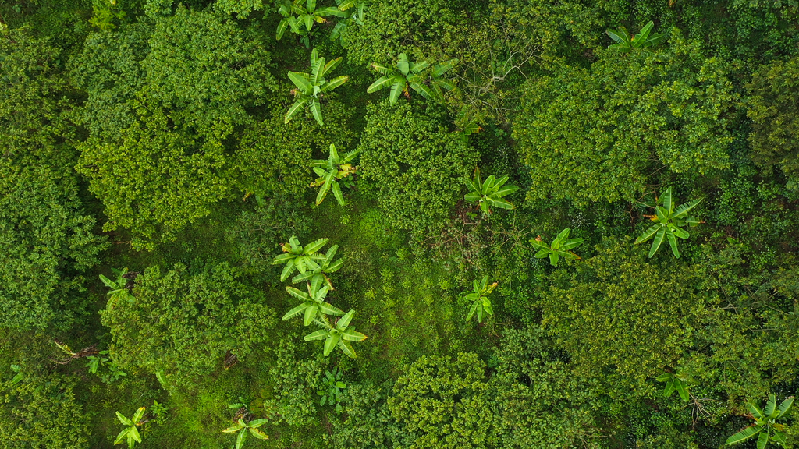

About Me & My Vision


I am a Computer Science student at Dalhousie University,
committed to leveraging technology for meaningful social and environmental change.
My long-term goal is to establish a community-led organization in rural Uganda focused on the following objectives:
- Equipping smallholder farmers with practical training in sustainable agroforestry techniques
- Restoring degraded landscapes through the strategic planting of native tree species
- Securing project registration with internationally recognized carbon crediting standards to create reliable revenue streams
- Ensuring equitable distribution of generated income directly to participating communities
Key challenges and corresponding solutions include:
- Challenges
- Widespread deforestation driven by charcoal production and agricultural expansion
- Restricted access to established carbon markets for small-scale producers
- Increased climate vulnerabilities, including drought and pest outbreaks
- Solutions
- Comprehensive community-based training and capacity-building programs
- Strategic alliances with reputable standards bodies such as Verra and Gold Standard
- Selection and promotion of climate-resilient, native tree varieties